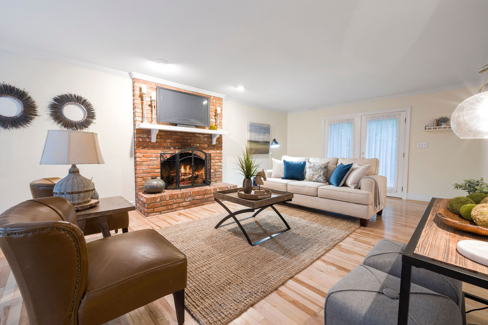

01 / 05
Entry
Limewashed walls and a travertine threshold set a quiet first note. Brass hardware warms to the hand over the years.
LimewashTravertineAged brass
We design whole homes, not single rooms in isolation. So we show them the way you'd live in them: entry first, details last.
Begin the walkthrough
A home is a sequence, not a gallery. We plan light, material and movement so each room hands you gently to the next.
Every project follows the route a resident actually takes. Materials are documented per room, so you can see exactly what you'd touch.
Limewashed walls and a travertine threshold set a quiet first note. Brass hardware warms to the hand over the years.
The original brick hearth stays as the anchor. Linen, walnut and a jute rug soften it, and terracotta pulls the warmth across the room.
Hand-glazed zellige catches the morning light; honed marble and unlacquered brass are chosen to patina, not to stay perfect.
Clay plaster absorbs sound and light. Bouclé and smoked oak keep everything low, soft and slow.
Thrown ceramics, cast iron and beeswax finishes: the small things that make a room feel finished rather than staged.
Drag the handle (or use your arrow keys) to compare. Every renovation project includes an honest before/after, not just hero shots.
Concept demo: the “before” state is an illustrative treatment of the finished photo.
We start on site, following the route you take every day.
Physical samples per room, approved before anything is ordered.
Our own joiners and plasterers, with weekly photo updates.
We place the last ceramic and give you the keys.
A two-hour on-site consultation, with a written material brief you keep either way.
Book a consultation